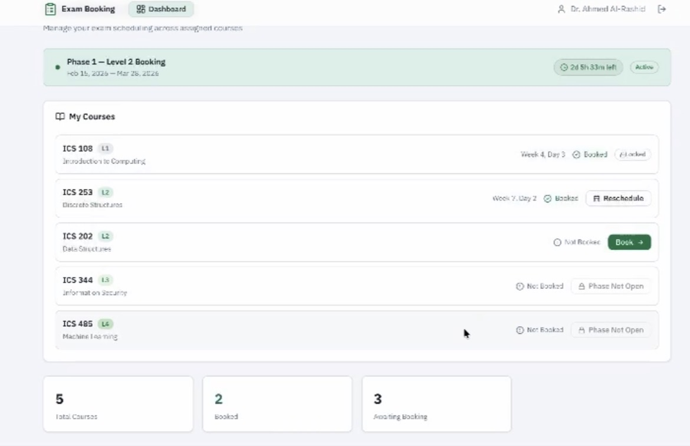
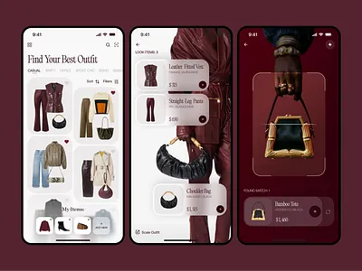
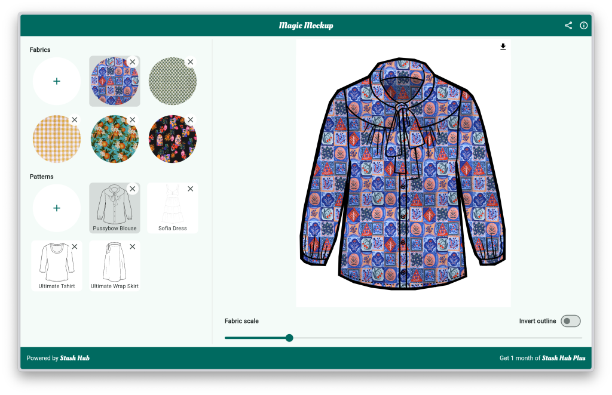
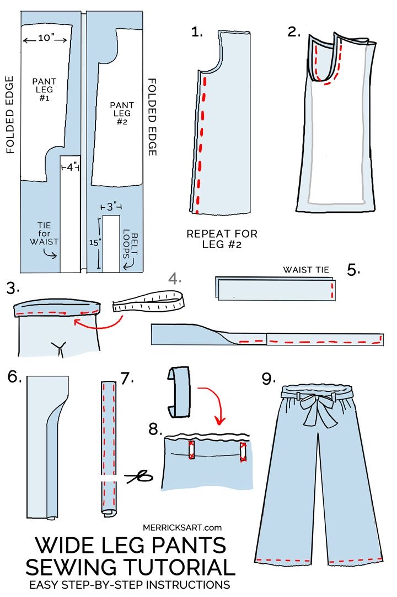
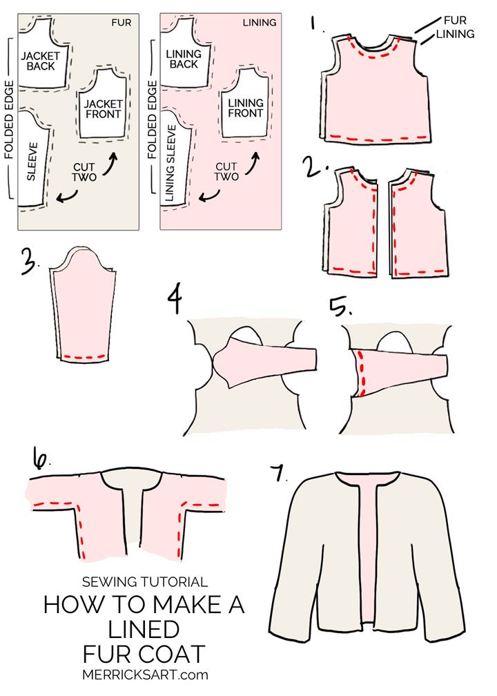
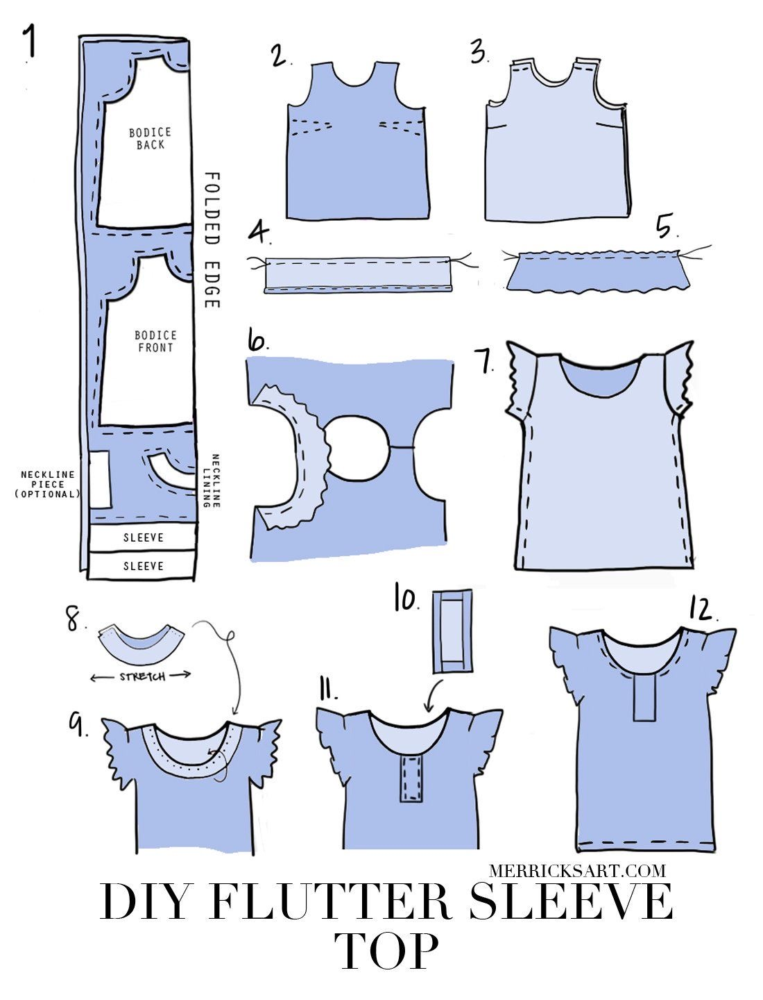
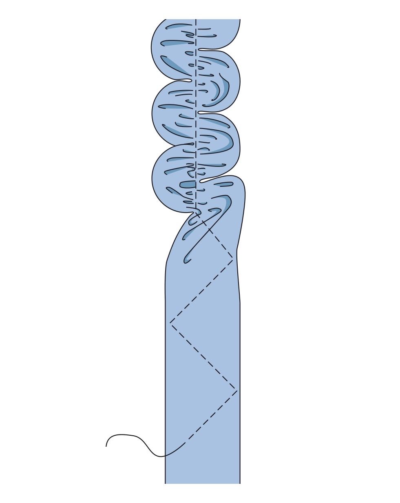
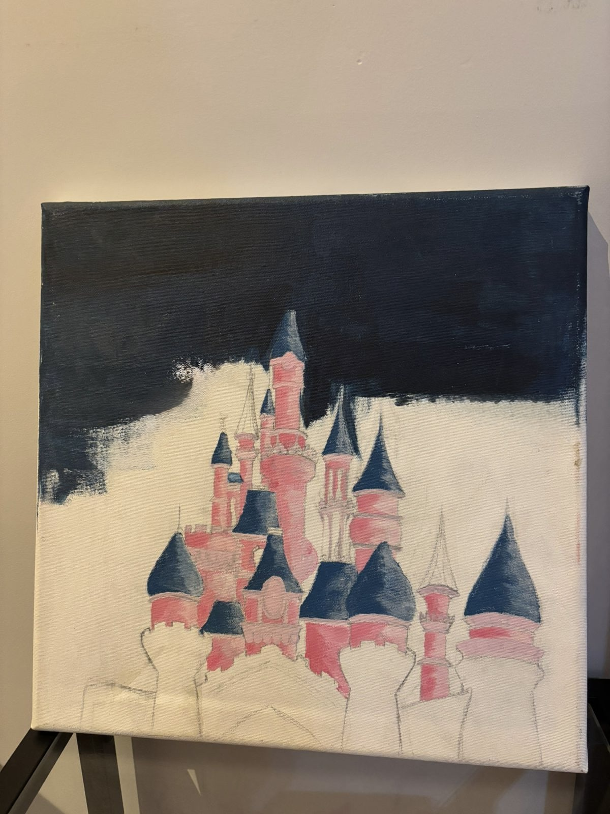
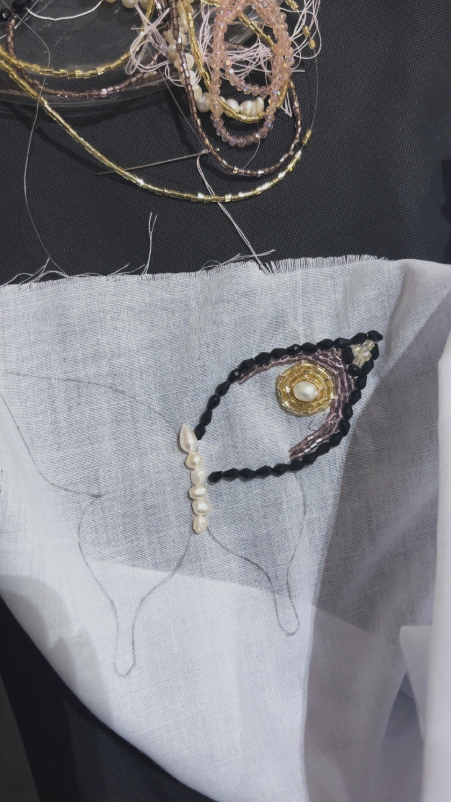
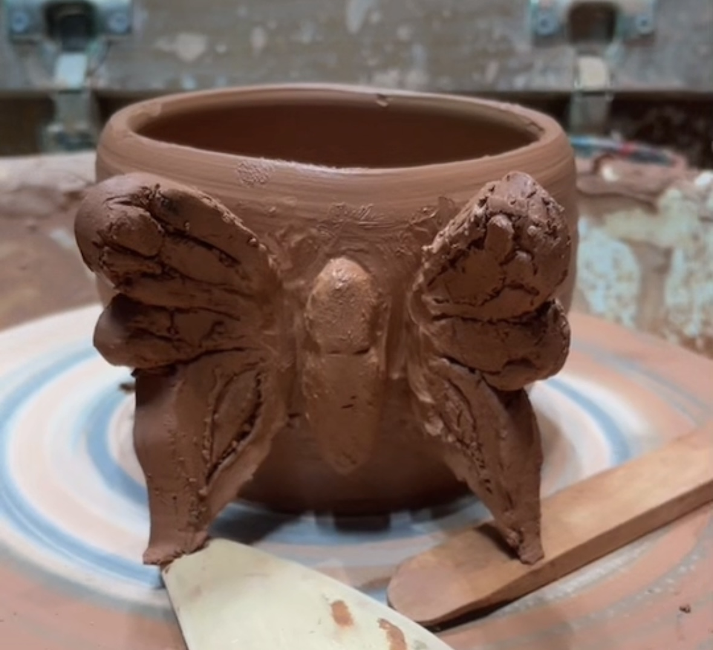

Jana Damdam
Hello!
So nice to meet you! Let me introduce myself. My name is Jana, I am a Computer Science student passionate about learning web technologies and creating practical projects. I like designing clean interfaces and improving my problem-solving skills through hands-on work. Outside of tech, I am an artist exploring different kinds of art and a beginner sewist who enjoys working with clothing and design.
Here you can view all projects from both my professional and creative interests.
About Me
I enjoy building projects that combine practicality and creativity. My interests include portfolio development, sewing-related digital tools, and creative hobbies such as painting.

Midterm & Majors Scheduling System
A university project focused on managing midterm and major exam scheduling. It aims to organize exam periods efficiently, reduce conflicts, and improve coordination between courses and students.

Digital Closet (In Progress)
A personal web app inspired by my journey as a beginner sewist. I’m building it to organize my clothes digitally and explore outfit combinations while improving my skills.





Sewing Office
A concept that connects my interest in sewing with digital organization. In the professional view, it appears as a product mockup. In the creative view, it reflects actual sewing-related work and inspiration.




Art Archive
A creative concept for organizing painting ideas, finished pieces, and inspiration in one digital space. It reflects my interest in combining creativity with simple digital organization.